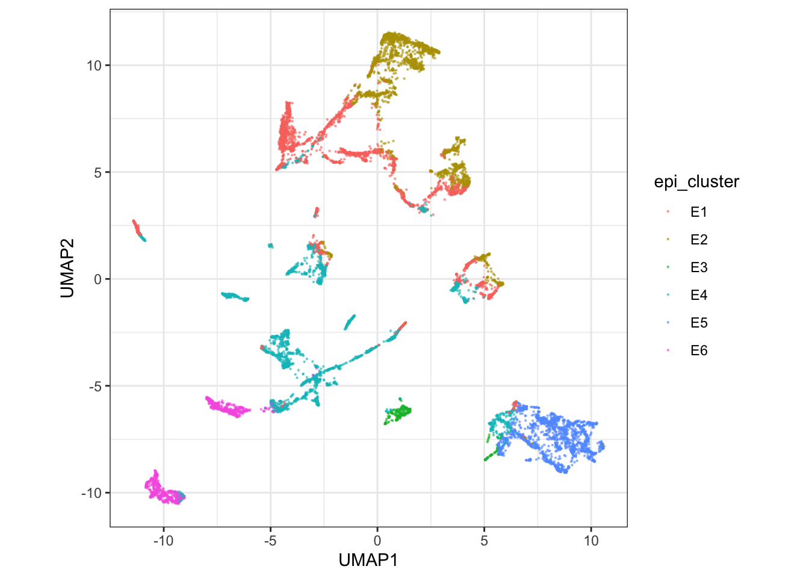
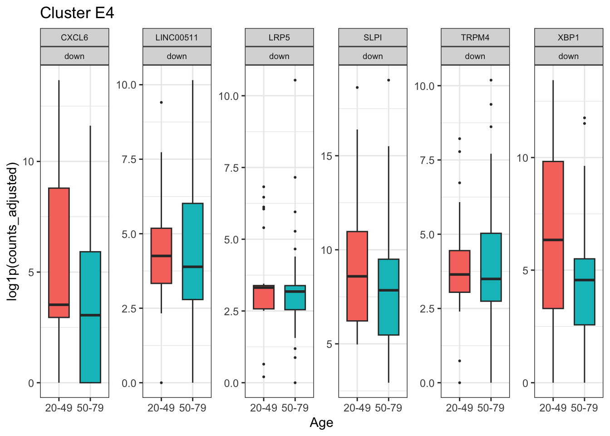

Continue in the same session. This block integrates epithelial cells, aggregates sample-by-cluster pseudobulk, and tests donor-level age effects with DESeq2 through tidybulk (Love et al. 2014). The last section scores the resulting signature back onto single cells (Foroutan et al. 2018).
The reusable script for everything you have run is installed with the package:
file.edit(system.file(
"scripts", "workshop_respiratory_ageing.R",
package = "cellNexusWorkshop"
))
library(cellNexus)
library(cellNexusWorkshop)
library(dplyr)
library(ggplot2)
library(scater)
library(scuttle)
library(scran)
library(scrapper)
library(bluster)
library(harmony)
library(SingleCellExperiment)
library(SummarizedExperiment)
library(Matrix)
library(tidySingleCellExperiment)
library(tidySummarizedExperiment)
library(tidybulk)
library(AnnotationDbi)
library(org.Hs.eg.db)
library(stringr)
if (!exists("obs_lung")) {
obs_lung <- get_metadata() |>
keep_quality_cells() |>
dplyr::filter(
dataset_id %in% respiratory_dataset_ids(),
cell_type_unified_ensemble %in% c(immune_cell_types(), epithelial_cell_types()),
age_days >= 365,
age_days < 80 * 365
) |>
annotate_cell_nexus(min_cells_per_sample = 50)
}Integrate and cluster the epithelial compartment
The broad label epithelial mixes ciliated, secretory,
basal, and alveolar states. We integrate cells, cut the embedding into
six clusters, and test age inside the cluster that can support the
design.
The download is capped by CELLNEXUS_WORKSHOP_MAX_CELLS
(default 4000). The example figures use 12000 cells. Harmony here is for
clustering and the UMAP. The counts still carry study effects, and the
model below still includes dataset_id.
epi_cell_cap <- as.integer(Sys.getenv("CELLNEXUS_WORKSHOP_MAX_CELLS", "4000"))
min_cells_pb <- 10L
set.seed(42)
epi_cells <- obs_lung |>
dplyr::filter(cell_type_unified_ensemble == "epithelial")
epi_cells <- dplyr::slice_sample(
epi_cells,
n = min(epi_cell_cap, nrow(epi_cells))
)
sce_epi <- epi_cells |>
get_single_cell_experiment(assays = "counts") |>
logNormCounts()
hvgs <- sce_epi |>
modelGeneVar() |>
getTopHVGs(n = 2000)
sce_epi <- sce_epi |>
runPCA(ncomponents = 30, subset_row = hvgs) |>
RunHarmony(
group.by.vars = "dataset_id",
dims.use = 1:30,
verbose = FALSE,
reduction.save = "HARMONY"
) |>
runUMAP(dimred = "HARMONY", n_neighbors = 15)
sce_epi$epi_cluster <- factor(paste0(
"E",
clusterCells(
sce_epi,
use.dimred = "HARMONY",
BLUSPARAM = KmeansParam(centers = 6L)
)
))
sce_epi |>
ggplot(aes(UMAP1, UMAP2, colour = epi_cluster)) +
geom_point(size = 0.3, alpha = 0.6) +
coord_equal() +
theme_bw()
k-means labels are arbitrary. E1 in your session is not
E1 in the example figure. The next section chooses the
cluster from a screen, which you report alongside the label.
Aggregate sample-by-cluster pseudobulk
aggregateAcrossCells.se() sums raw counts within each
sample and cluster. The column ncells is the number of
cells that entered each pseudobulk. Profiles with fewer than 10 cells
are dropped. log_cell_count is a scaled depth covariate so
profiles built from different numbers of cells are comparable.
Precomputed get_pseudobulk() is sample by broad cell
type. It is the right object for a cell-type-level question. This
article needs sample by cluster, so the aggregation is done here.
pb_se <- scrapper::aggregateAcrossCells.se(
sce_epi,
factors = list(
sample_id = sce_epi$sample_id,
epi_cluster = sce_epi$epi_cluster
),
counts.name = "ncells"
)
SummarizedExperiment::assayNames(pb_se)[
SummarizedExperiment::assayNames(pb_se) == "sums"
] <- "counts"
pb_se <- pb_se |>
dplyr::filter(ncells >= min_cells_pb) |>
dplyr::mutate(log_cell_count = as.numeric(scale(log1p(ncells))))
pb_seConfirm that ncells is the size of the aggregation
group. Row sums of the count matrix are library size, which is orders of
magnitude larger, and using them as the depth covariate answers a
different question.
Choose a cluster and fit the age model
select_de_cluster() keeps clusters in which both age
classes are represented and the design can separate age from study. It
prefers the cluster supported by the most studies that contribute both
age classes. The default screen asks for 150 cells and 5 samples in each
class. A 4000-cell cap may need the slightly lower thresholds below. If
the function stops, read the printed screen and lower
min_samples_per_class, or raise
CELLNEXUS_WORKSHOP_MAX_CELLS and rebuild
pb_se.
de_design <- ~ age_binary + log_cell_count + dataset_id
de_contrast <- list(c("age_binary", "old", "young"))
de_log2_fold_change_threshold <- 1
de_signature_max_genes <- 25L
epi_cluster_screen <- select_de_cluster(
pb_se,
de_design,
min_cells_per_class = 100L,
min_samples_per_class = 4L
)
epi_cluster_de_top <- epi_cluster_screen$cluster
epi_cluster_screen$screenExercise 8. From
epi_cluster_screen$screen, which cluster was chosen? How many studies in that cluster contribute both age classes (n_datasets_spanning_age)? Quote the screen table with the result. The label alone is not reproducible.
Solution
epi_cluster_de_top
epi_cluster_screen$screenThe chosen row is the first row of the screen after eligible clusters
are sorted by n_datasets_spanning_age, then by the number
of pseudobulk profiles. Quote n_datasets_spanning_age for
that row. A value of 1 means the age term rests on a single study.
The contrast is old versus young: positive log fold changes are
higher in donors over 50. DESeq2 tests against a log2 fold change of 1,
so the p-value asks whether the change exceeds a doubling. Say that when
you report the p-values. sfType = "poscounts" estimates
size factors on sparse pseudobulk, where the default median-of-ratios
estimator can find no gene detected in every profile.
Genes are kept when they reach 5 counts per million in at least half of the profiles, evaluated with respect to age, so a gene expressed in one age class survives.
pb_se <- pb_se[, pb_se$epi_cluster == epi_cluster_de_top]
pb_se <- pb_se[, Matrix::colSums(assay(pb_se, "counts")) > 0]
assay(pb_se, "counts") <- round(assay(pb_se, "counts"))
pb_se$sizeFactor <- NULL
pb_se$age_binary <- factor(
ifelse(pb_se$age_binary, "old", "young"),
levels = c("young", "old")
)
pb_se <- pb_se |>
keep_abundant(
formula_design = ~ age_binary,
minimum_proportion = 0.5,
minimum_count_per_million = 5
) |>
test_differential_expression(
de_design,
contrasts = de_contrast,
method = "DESeq2",
omit_contrast_in_colnames = TRUE,
test_above_log2_fold_change = de_log2_fold_change_threshold,
sfType = "poscounts"
) |>
adjust_abundance(
.factor_unwanted = c(log_cell_count, dataset_id),
.factor_of_interest = age_binary,
method = "limma_remove_batch_effect"
)adjust_abundance() is for the figure. The test used the
unadjusted counts. Batch-adjusted values stay out of any further
test.
de_results <- rowData(pb_se) |>
tibble::as_tibble(rownames = ".feature") |>
dplyr::mutate(
gene_symbol = AnnotationDbi::mapIds(
org.Hs.eg.db,
keys = stringr::str_replace(.feature, "\\.[0-9]+$", ""),
keytype = "ENSEMBL",
column = "SYMBOL",
multiVals = "first"
) |>
unname() |>
dplyr::coalesce(.feature)
)
signature_up <- de_results |>
dplyr::filter(pvalue < 0.05, log2FoldChange > 0) |>
dplyr::slice_min(pvalue, n = de_signature_max_genes)
signature_down <- de_results |>
dplyr::filter(pvalue < 0.05, log2FoldChange < 0) |>
dplyr::slice_min(pvalue, n = de_signature_max_genes)
signature_upThe signature uses a nominal p-value cutoff, capped at 25 genes in each direction. It is a gene set for scoring. A claim about an individual gene needs the false-discovery column as well. Report both.
marker_genes <- dplyr::bind_rows(
dplyr::mutate(signature_up, direction = "up"),
dplyr::mutate(signature_down, direction = "down")
) |>
dplyr::select(.feature, gene_symbol, direction)
marker_plot_df <- pb_se[marker_genes$.feature, ] |>
as_tibble() |>
dplyr::left_join(marker_genes, by = ".feature")
ggplot(marker_plot_df, aes(age_bin, log1p(counts_adjusted), fill = age_bin)) +
geom_boxplot(outlier.size = 0.4, width = 0.65) +
facet_wrap(~ gene_symbol + direction, scales = "free_y", ncol = 6) +
theme_bw() +
theme(legend.position = "none", strip.text = element_text(size = 7)) +
labs(
x = "Age",
y = "log1p(counts_adjusted)",
title = paste("Cluster", epi_cluster_de_top)
)
Exercise 9. In
de_contrast, which age class is the numerator? Check one gene insignature_upagainst its boxplot and confirm the direction matches.
Solution
c("age_binary", "old", "young") tests old against young.
Positive log2FoldChange means higher abundance in donors
over 50. The boxplot for a gene in signature_up should sit
higher in the 50-79 bin. If it sits lower, the factor
levels and the contrast disagree.
Score the signature on single cells
If time remains. The score is the mean rank of the up genes minus the mean rank of the down genes, on the cells of the cluster that was tested. A shift between age classes is expected, because the genes were chosen on these donors. Treat it as a consistency check: a reversed or empty shift means a reversed contrast, the wrong cluster, or an identifier mismatch. Report how many signature genes were found in the matrix. Ensembl identifiers with a version suffix are a common way to lose most of the set. Generalisation needs donors held out before gene selection, or another cohort.
library(singscore)
sce <- sce_epi |>
dplyr::filter(epi_cluster == epi_cluster_de_top)
rank_mat <- rankGenes(as.matrix(assay(sce, "logcounts")))
sce$aging_signature_score <- simpleScore(
rank_mat,
upSet = signature_up$.feature,
downSet = if (nrow(signature_down) > 0) signature_down$.feature else NULL
)$TotalScore
mean(signature_up$.feature %in% rownames(sce))
mean(signature_down$.feature %in% rownames(sce))
sce |>
ggplot(aes(UMAP1, UMAP2, colour = aging_signature_score)) +
geom_point(size = 0.3, alpha = 0.6) +
scale_colour_viridis_c(option = "magma") +
facet_wrap(~ age_bin, ncol = 2) +
coord_equal() +
theme_bw() +
labs(colour = "Ageing score", title = paste("Cluster", epi_cluster_de_top))
sce |>
ggplot(aes(aging_signature_score, fill = age_bin, colour = age_bin)) +
geom_density(alpha = 0.35, linewidth = 0.6) +
theme_bw() +
labs(x = "Ageing signature score", y = "Density", fill = "Age", colour = "Age")What you now have
One session, from a cellNexus query to two donor-level answers:
- whether immune proportions differ between donors under and over 50,
at fixed study (
sccomp_res) - whether epithelial transcription in one cluster differs between
those same donors (
de_results)
Save the script from
system.file("scripts", "workshop_respiratory_ageing.R", package = "cellNexusWorkshop").
Changing the dataset list, the cell-type vectors, or the age cut is how
the same workflow moves to another tissue or another question.
Solutions: Solutions.